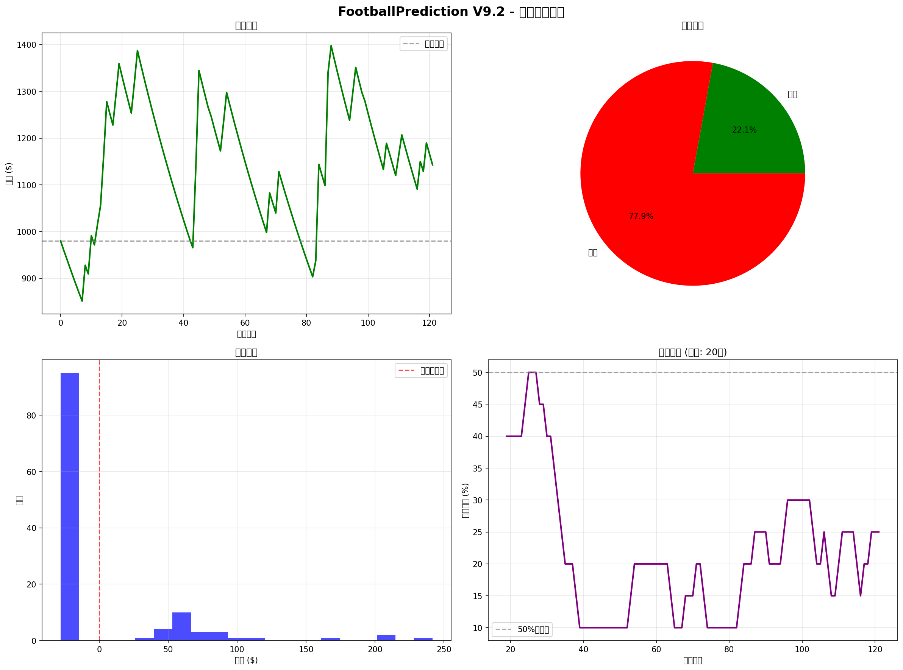

| 比赛 | 投注 | 赔率 | 结果 | 收益 |
|---|---|---|---|---|
| Arsenal vs Wolverhampton Wanderers | away_win | 13.0 | LOSS | $-24.14 |
| Arsenal vs Wolverhampton Wanderers | away_win | 13.0 | LOSS | $-23.65 |
| West Ham United vs Aston Villa | draw | 3.6 | LOSS | $-23.18 |
| West Ham United vs Aston Villa | draw | 3.6 | LOSS | $-22.72 |
| AFC Bournemouth vs Burnley | draw | 3.5 | LOSS | $-22.26 |
| Wolverhampton Wanderers vs Brentford | draw | 3.7 | WIN | $58.90 |
| AFC Bournemouth vs Burnley | draw | 3.5 | LOSS | $-20.94 |
| Wolverhampton Wanderers vs Brentford | draw | 3.7 | WIN | $60.95 |
| Everton vs Arsenal | home_win | 5.25 | LOSS | $-23.79 |
| Everton vs Arsenal | home_win | 5.25 | LOSS | $-23.32 |
生成时间: 2025-12-22 12:36:56
数据源: simple_calibrated_trades_v91.csv
系统版本: V9.2 Production Ready
校准状态: ✅ 已校准